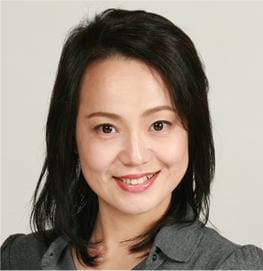

Yumi Kusaka is a Japanese voice actress.
- Gender: Female
- Birthday: March 10, 1963
- Birthplace: Kanagawa, Japan
| |
Yumi Kusaka is a Japanese voice actress.
|
 |
|---|
 |
Kanako Mishou | Pretty Cure Splash Star | Kanako Mishou is Mai Mishou's mother. She is a professor of archaeology at a university, and as such she is often busy working and neglects her sleep or other necessities. She caring and responsible something. |